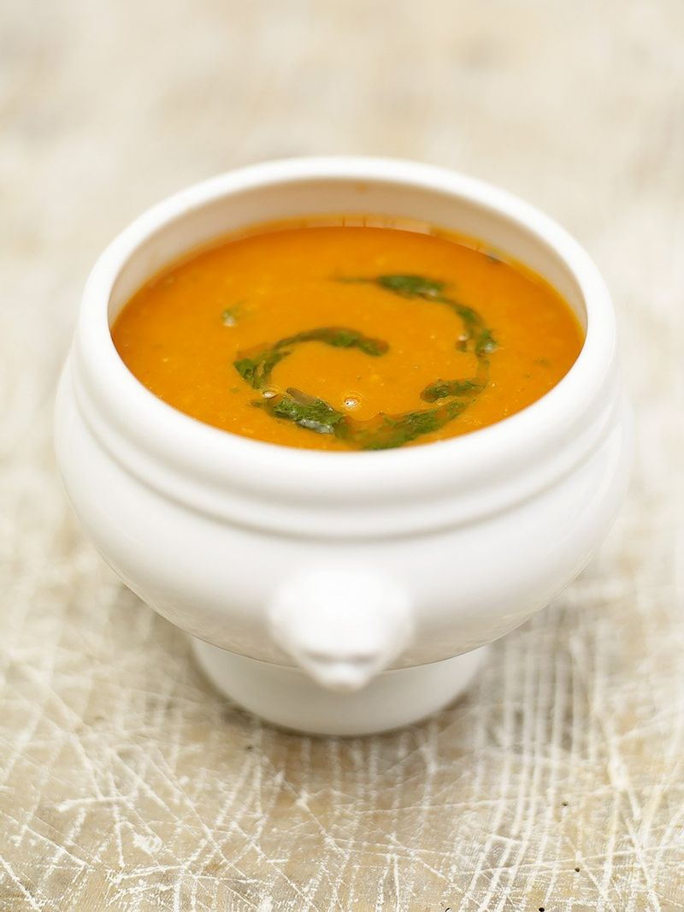

Tomato Soup
-
Cooks in 45 minutes
-
Easy to make
-
Healthy

| Ingredients |
Amount |
| Carrots |
2 |
| Celery |
2 sticks |
| Onions |
2 |
| Garlic |
2 gloves |
| Vegetable stock cubes |
2 |
| Canned tomatoes |
800g |
| Olive oil |
1 tbsp |
- Peel and shop the vegetables.
- Cook the prepped vegetables in olive oil.
- Add stock cubes, boiling water and canned tomatoes.
- Boil the soup.
- Add seasoning and use a blender to pulse the soup until smooth.